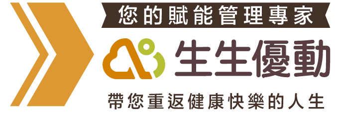

<!DOCTYPE html><!--  This site was created in Webflow. http://www.webflow.com  -->
<!--  Last Published: Wed Jan 06 2021 13:27:51 GMT+0000 (Coordinated Universal Time)  -->
<html data-wf-page="5aebc5d21261dea7c79439a7" data-wf-site="5aebc5d21261de271d9439a2">
<head>
  <meta charset="utf-8">
  <title>疼痛OUT!生生優動 運動物理治療所 幫你遠離疼痛人生!</title>
  <meta content="width=device-width, initial-scale=1" name="viewport">
  <meta content="Webflow" name="generator">

  <link rel="icon" href="https://event.aicarept.com/static/img/logo_32.png" sizes="16x16" type="image/png">
  <link rel="icon" href="https://event.aicarept.com/static/img/logo_32@2x.png" sizes="32*32" type="image/png">
  <meta charset="UTF-8"/>
  <meta name="viewport" content="width=device-width, initial-scale=1.0,maximum-scale=1.0, user-scalable=no"/>
  <meta http-equiv="X-UA-Compatible" content="ie=edge"/>
  <meta name="format-detection" content="telephone=no"/>
  <meta name="keywords" content="生生優動-生生不息 好好運動-了解身體疼痛的訊號"/>
  <meta name="author" content=""/>
  <meta name="copyright" content="生生優動-生生不息 好好運動-了解身體疼痛的訊號"/>
  <meta name="description" content="生生優動-生生不息 好好運動-了解身體疼痛的訊號"/>
  <meta property="fb:app_id" content=""/>
  <meta property="og:title" content="生生優動 AiCare"/>
  <meta property="og:type" content="website"/>
  <meta property="og:url" content="https://www.aicarept.com/og-share-image.png"/>
  <meta property="og:image" content="images/"/>
  <meta property="og:image:width" content=""/>
  <meta property="og:image:height" content=""/>
  <meta property="og:description" content="生生優動 AiCare"/>

  <link href="css/normalize.css" rel="stylesheet" type="text/css">
  <link href="css/webflow.css" rel="stylesheet" type="text/css">
  <link href="css/stevi-practice.webflow.css" rel="stylesheet" type="text/css">
  <script src="https://ajax.googleapis.com/ajax/libs/webfont/1.6.26/webfont.js" type="text/javascript"></script>
  <script type="text/javascript">WebFont.load({  google: {    families: ["Open Sans:300,300italic,400,400italic,600,600italic,700,700italic,800,800italic","Droid Sans:400,700","Roboto:300,regular,500"]  }});</script>
  <!-- [if lt IE 9]><script src="https://cdnjs.cloudflare.com/ajax/libs/html5shiv/3.7.3/html5shiv.min.js" type="text/javascript"></script><![endif] -->
  <script type="text/javascript">!function(o,c){var n=c.documentElement,t=" w-mod-";n.className+=t+"js",("ontouchstart"in o||o.DocumentTouch&&c instanceof DocumentTouch)&&(n.className+=t+"touch")}(window,document);</script>
  <link href="https://event.aicarept.com/static/img/logo_32@2x.png" rel="shortcut icon" type="image/x-icon">
  <link href="images/webclip.png" rel="apple-touch-icon">
</head>
<body class="body">
  <div class="div-block-29">
    <div class="div-block-30">
      <h4 class="heading-13">注意事項及個資告知事項</h4>
      <p class="paragraph-12">依政府規定，預約首次診療需攜帶醫師所開立之診斷證明，醫囑或照會，並依照個人身體狀況進行評估。生生優動運動物理治療所 向台端蒐集的個人資料，包括姓名、性別、住址及聯絡方式等，將使用於本活動需要之會員管理、業務推廣及行銷之目的內使用，並於蒐集目的之存續期間內合理以電子檔案或紙本形式於我國境內供本館利用台端的個人資料，並遵守『個人資料保護法』之規定妥善保存。基於個人資料保護法之規定，在台端同意本館處理及利用相關資料時，台端享有查詢、閱覽、製給複製本、補充或更正、停止蒐集、處理、利用及刪除個人資料之權利。另，若台端選擇不提供個人資料，本活動將無法提供您相關服務。</p>
      <a data-w-id="d49d76a2-259d-0654-f706-7e5a6369164a" href="#" class="button-3 button-4 w-button">關閉</a>
    </div>
  </div>
  <div class="hero-section centered">
    <div data-ix="new-interaction" class="container-2 w-container"></div>
  </div>
  <div class="section-3">
    <div class="container-9 w-container"></div>
    <div class="container-8 w-container">
      <div class="columns-10 w-row">
        <div class="w-col w-col-4 w-col-small-4 w-col-tiny-tiny-stack"></div>
        <div class="w-col w-col-4 w-col-small-4 w-col-tiny-tiny-stack"></div>
        <div class="w-col w-col-4 w-col-small-4 w-col-tiny-tiny-stack"></div>
      </div>
    </div>
    <div class="w-container">
      <div class="columns-8 w-row">
        <div class="w-col w-col-6 w-col-small-6"></div>
        <div class="w-col w-col-6 w-col-small-6"></div>
      </div>
    </div>
  </div>
  <div class="section-6">
    <div class="div-block-32">
      
      <!-- <div class="w-col w-col-3">
        
      </div> -->
    </div>
    <!-- <div class="container-3 w-container">
      <div class="columns-9 w-row">
        
        <div class="column-20 w-col w-col-9"></div>
      </div>
    </div> -->
    <div class="container-6 w-container">
      <div class="columns-21 w-row">
        
      </div>
    </div>
    <!-- <div class="div-block-9">
      <h1 class="heading-8">遠離疼痛, 重拾生活品質<br><strong class="bold-text-5">關鍵在安全有效的徒手治療＋主動正確的運動</strong><br></h1>
    </div> -->
    <!-- <div class="container-5 w-container">
      <div class="columns-5 w-row">
        <div class="column-6 w-col w-col-5">
          <div class="text-block-5"><strong class="bold-text-6">兩大健康</strong><strong class="bold-text-8">核心</strong><strong class="bold-text-6">環扣</strong></div>
          <div class="text-block-7">專為慢性疼痛、銀髮族量身定做</div>
        </div>
        <div class="w-col w-col-7"></div>
      </div>
      <div class="div-block-10">
        <div class="text-block-6"><strong class="bold-text-15">結合 《專業物理治療師徒手治療》&amp;《SMARC AI運動復健課程》幫助找回健康身體機能!</strong></div>
      </div>
    </div> -->
  </div>
  <div class="section-5 accent">
    <div class="w-container">
      <div class="section-title-group">
        <!--  -->
        <!-- <h2 class="section-heading centered white">放心交付的<strong class="bold-text-46">專業物理治療團隊</strong></h2> -->
        <div class="section-subheading center off-white"><strong class="bold-text-9">台大權威物理治療專家林訓正領軍</strong>，<br>每位治療師都協助過上百位個案，<br>搭配報告綜合分析出身體核心問題，<br><strong class="bold-text-44">針對疼痛部位進行專業的徒手治療</strong>，緩解不適，<br><strong class="bold-text-45">同時提升接下來的運動復健成效。</strong><br></div>
      </div>
      <h3 class="section-heading centered white">安全又看得到成效的運動方式<br><strong class="bold-text-10">AI醫療級運動復健器材-SMARC</strong></h3>
      <div class="columns-20 w-row">
        <div class="column-28 w-col w-col-8 w-col-small-8">
          <p class="paragraph-7">由台灣與東京大學聯合開發，以物理治療師一對一運動治療的理念延伸，專為疼痛控制及回復身體機能的醫療級運動復健器材SMARC，目前為各大醫學中心指定使用。<br><br>SMARC可連結AI數據分析身體狀態，並提供個人化的運動處方，讓您循序漸進控制痠痛、強化機能，每次運動復健後還會產出<strong class="bold-text-18"> 運動評估報告</strong>，可以 <strong class="bold-text-19">長期追蹤成效</strong>，讓訓練更有效果。 <span class="text-span-5">衛部醫器製壹字第005238號</span></p>
        </div>
        <div class="column-29 w-col w-col-4 w-col-small-4"></div>
      </div>
      <div class="columns-6 w-row">
        <div class="column-32 w-col w-col-4 w-col-small-4 w-col-tiny-tiny-stack"></div>
        <div class="column-22 w-col w-col-4 w-col-small-4 w-col-tiny-tiny-stack"></div>
        <div class="column-31 w-col w-col-4 w-col-small-4 w-col-tiny-tiny-stack"></div>
      </div>
    </div>
  </div>
  <div class="section-5">
    <div class="container-4 w-container">
      <div class="section-title-group">
        <h2 class="section-heading centered">使用者見證</h2>
      </div>
    </div>
    <div class="w-container">
      <div class="columns-11 w-row">
        <div class="column-9 w-col w-col-3 w-col-medium-6 w-col-small-small-stack"></div>
        <div class="column-7 w-col w-col-9 w-col-medium-6 w-col-small-small-stack">
          <h2 class="heading-9">從「疼痛人生 到 成就人生」</h2>
          <p class="paragraph-9">年輕時工作腰受傷，只要 <strong class="bold-text-20">久坐超過30分鐘就如坐針氈</strong>，看了多次復健及平常吊單槓放鬆都不見效，直到朋友推薦生生優動，從專業治療師和SMARC AI個人化的運動處方，才知道原來是我的 <strong class="bold-text-21">腰腹核心肌群及臀肌不夠力</strong>，讓我無法支撐久坐，在一段時間的運動復健後，現在久坐2小時都不是問題，甚至可以跟家人一起去登百岳！</p>
        </div>
      </div>
      <div class="columns-12 w-row">
        <div class="column-10 w-col w-col-3 w-col-stack"></div>
        <div class="column-8 w-col w-col-9 w-col-stack">
          <h2 class="heading-10">不用麻煩家人，能夠靠自己的感覺真好！</h2>
          <p class="paragraph-8">在一次洗頭髮突然手舉不起來，當下很緊張，隔天兒子馬上帶我去看中醫，經過診治過後說是<strong class="bold-text-22">「五十肩」</strong>，陸續搭配針灸推拿，手的活動度依然沒改善，就這樣請先生幫我洗頭半年之久，直到朋友推薦我到生生優動，由專業的物理治療師和 SMARC AI運動處方，才知道正確的是要先以 徒手治療鬆動肩周肌肉與粘連的關節腔，再透過 <strong class="bold-text-23">伸展運動</strong> 延展肩部周邊肌肉與韌帶，加上 <strong class="bold-text-24">強化肩膀及上臂肌肉的強度，才能夠讓50肩『長治久安』！</strong>經過半年我已經復健『畢業』了～終於不用再讓家人擔心。</p>
        </div>
      </div>
      <div class="text-block-34">以上心得見證為個人體驗分享，若有任何病症問題，務必請專業醫師、物理治療師深入評估</div>
    </div>
    <div class="container-6 w-container">
      <h3 class="section-heading centered white">恢復身體健康機能，<br><strong class="bold-text-25">重新掌握身體自主權不是夢！</strong></h3>
      <div class="div-block-11">
        <div class="columns-18 w-row">
          <div class="column-26 w-clearfix w-col w-col-3 w-col-tiny-3"></div>
          <div class="column-11 w-col w-col-6 w-col-tiny-6">
            <div class="text-block-8"><strong class="bold-text-28">現在馬上預約，</strong><br> 體驗「首次診療」方案 <span class="text-span-3">$</span><strong class="bold-text-29">799</strong></div>
          </div>
          <div class="column-21 w-col w-col-3 w-col-tiny-3">
            <a href="#submit" class="button-2 w-button">立即預約</a>
          </div>
        </div>
      </div>
      <div class="div-block-12">
        <div class="columns-17 w-row">
          <div class="w-col w-col-7 w-col-tiny-tiny-stack">
            <h1 class="heading-11"><strong class="bold-text-48">首次診療方案</strong></h1>
            <p class="paragraph-10"><strong class="bold-text-26">全方位身體體況評估及專業物理徒手治療</strong>，搭配<strong class="bold-text-27">SMARC AI運動訓練課程</strong>，讓您體驗個人化的徒手與運動賦能治療。</p>
            <p class="paragraph-13"><strong class="bold-text-49">天母分院</strong> Tel | <strong class="bold-text-51">02-28728889</strong><br><strong class="bold-text-50">民生分院</strong> Tel | <strong class="bold-text-52">02-28721526</strong><br><strong class="bold-text-49">忠孝新生分院</strong> Tel | <strong class="bold-text-51">02-87736572</strong><br></p>
          </div>
          <div class="column-24 w-col w-col-5 w-col-tiny-tiny-stack"></div>
        </div>
      </div>
      <h3 class="section-heading centered white"><strong class="bold-text-25">生生優動AI Care ＆ 一般自費物理治療所差異</strong></h3>
    </div>
    <div class="w-layout-grid grid-6">
      <div class="div-block-18"></div>
      <div id="w-node-1fe00183574c-c79439a7" class="div-block-19">
        <div class="text-block-14">設備安全性</div>
      </div>
      <div id="w-node-ceab2a318f8e-c79439a7" class="div-block-13">
        <div class="text-block-21">服務特色</div>
      </div>
      <div id="w-node-ec487e392b9c-c79439a7" class="columns-14 w-row">
        <div class="w-col w-col-1 w-col-small-1 w-col-tiny-1"></div>
        <div class="column-15 w-col w-col-11 w-col-small-11 w-col-tiny-11">
          <div class="text-block-10">醫療級設備，阻力穩定、可即始即停</div>
        </div>
      </div>
      <div id="w-node-e9e19022fff7-c79439a7" class="div-block-16">
        <div class="w-row">
          <div class="w-col w-col-1 w-col-small-1 w-col-tiny-1"></div>
          <div class="column-30 w-col w-col-11 w-col-small-11 w-col-tiny-11">
            <div class="text-block-11">1. SMARC可追蹤數據成效<br>2. 雲端管理每次運動成果</div>
          </div>
        </div>
      </div>
      <div id="w-node-9adb66548135-c79439a7" class="div-block-17">
        <div class="w-row">
          <div class="w-col w-col-1 w-col-small-1 w-col-tiny-1"></div>
          <div class="column-27 w-col w-col-11 w-col-small-11 w-col-tiny-11">
            <div class="text-block-12"><strong class="bold-text-32">1. 骨骼、肌肉、神經復健<br>2. 慢性病族群、術後復健<br>3. 疼痛控制、熟齡長者<br><br></strong><span class="text-span-5">衛部醫器製壹字第005238號</span></div>
          </div>
        </div>
      </div>
      <div id="w-node-3e93968f1ee6-c79439a7" class="div-block-14">
        <div class="columns-15 w-row">
          <div class="column-14 w-col w-col-3 w-col-small-3"></div>
          <div class="w-col w-col-9 w-col-small-9">
            <div class="text-block-13">生生優動 AI Care</div>
          </div>
        </div>
      </div>
      <div id="w-node-1011b2324cc2-c79439a7" class="div-block-20">
        <div class="text-block-15">適合族群</div>
      </div>
      <div id="w-node-348e1275d6ba-c79439a7" class="div-block-15">
        <div class="text-block-22">效能掌握度</div>
      </div>
      <div id="w-node-c23a7bff764b-c79439a7" class="columns-13 w-row">
        <div class="column-12 w-col w-col-1 w-col-small-1 w-col-tiny-1"></div>
        <div class="column-13 w-col w-col-11 w-col-small-11 w-col-tiny-11">
          <div class="text-block-9"><strong>1. 專業判斷：</strong>台大物理治療團隊醫學中心級完整評估流程 : 功能性動作評估與3D立體掃描足形足壓體態分析。<br> <br><strong class="bold-text-30">2. 徒手治療，一對一運動指導</strong><br>  <br><strong class="bold-text-31">3. 智能輔助：</strong>個人化精準SMARC運動復健器材</div>
        </div>
      </div>
      <div class="div-block-21">
        <div class="text-block-16">自費物理治療所</div>
      </div>
      <div class="div-block-22">
        <div class="text-block-17">1. 徒手治療<br>2. 運動治療<br>3. 儀器治療</div>
      </div>
      <div class="div-block-23">
        <div class="text-block-18">一般健身器材</div>
      </div>
      <div class="div-block-24">
        <div class="text-block-19">1. 人為經驗判斷<br>2. 無數據支持</div>
      </div>
      <div class="div-block-25">
        <div class="text-block-20">1. 較少針對熟齡<br>2. 以骨骼肌肉、運動傷害復健居多</div>
      </div>
    </div>
  </div>
  <div class="section-7">
    <div class="div-block-8">
      <div class="text-block-24">健康賦能運動<br><strong class="bold-text-33">生生優動 AI Care</strong><br><strong class="bold-text-34">能帶給您的還有更多</strong></div>
    </div>
    <div class="container-7 w-container">
      <div class="columns-9 w-row">
        <div class="w-col w-col-3 w-col-medium-3 w-col-small-3"></div>
        <div class="w-col w-col-9 w-col-medium-9 w-col-small-9">
          <div class="w-layout-grid grid-8">
            <div id="w-node-b5becf061a3b-c79439a7">
              <div class="text-block-26"><strong class="bold-text-36">生生優動是由台大物理治療專家團隊領軍</strong>，幫助精準找出您的疼痛問題，並執行 <strong class="bold-text-37">專業、正確的徒手治療</strong>，同時 <strong class="bold-text-38">結合AI醫療級運動復健器材 SMARC</strong>，能依據性別、年齡、身高、體重對應出該年齡層身體該有的素質狀態，綜合分析後提供個人化的AI運動處方，讓您 <strong class="bold-text-39">透過科學化的方式，舒緩症狀、強化身體機能，找回健康。<br></strong><span class="text-span-5"><strong class="bold-text-47">衛部醫器製壹字第005238號</strong></span></div>
            </div>
            <div></div>
            <div id="w-node-7be4b218a28f-c79439a7">
              <div class="text-block-25"><strong class="bold-text-35">為什麼要選擇生生優動</strong><br>而不是一般的自費物理治療所？</div>
            </div>
          </div>
        </div>
      </div>
      <div class="columns-9 w-row">
        <div class="column-23 w-col w-col-3 w-col-small-3"></div>
        <div class="w-col w-col-9 w-col-small-9">
          <div class="w-layout-grid grid-8">
            <div id="w-node-8204440ec985-c79439a7">
              <p class="paragraph-11"><strong>1. </strong>SMARC器材跟一般健身房器材最大的不同是 <strong class="bold-text-40">擁有專業的醫療認證，可依據個人身體功能性動作做到全方位評估</strong>，包含活動度、功能肌力、肌耐力、協調性、動作精準度等。<span class="text-span-4"> <br>‍</span><br><strong>2. </strong><strong class="bold-text-41">SMARC器材運動過程可即使即停</strong>，對於銀髮族或是已有肌肉慢性疼痛的人來說，是 <strong>更安全的選擇</strong>。<br>‍<br><strong>3. </strong>SMARC器材上有視覺化螢幕，可引導使用者動作更正確，每次運動復健後還有 <strong class="bold-text-42">成效報告，可長期追蹤成果</strong>。<br><span class="text-span-5"><strong class="bold-text-47">衛部醫器製壹字第005238號</strong></span><br></p>
            </div>
            <div></div>
            <div id="w-node-8204440ec994-c79439a7">
              <div class="text-block-25">運動去健身房就好了，<br><strong class="bold-text-43">為什麼要做SMARC？</strong></div>
            </div>
          </div>
        </div>
      </div>
    </div>
  </div>
  <!-- <div class="section-8">
    <div class="container-3 w-container">
      <div class="columns-19 w-row">
        <div class="column-25 w-col w-col-5 w-col-stack w-col-small-small-stack w-col-tiny-tiny-stack">
          
        </div>
        <div class="w-col w-col-7 w-col-stack w-col-small-small-stack w-col-tiny-tiny-stack"></div>
      </div>
    </div>
  </div> -->
  <div class="section-9">
    <div class="container-3 w-container">
      <div class="div-block-27">
        <div class="text-block-27">現在就填寫表單，<br>邁向健康人生，讓生活更有品質！</div>
        
        <!-- <div class="text-block-8">
          <strong class="bold-text-28">現在馬上預約，</strong><br> 體驗「首次診療」方案 <span class="text-span-3">$</span><strong class="bold-text-29">799</strong>
        </div> -->
        <!-- <h1 class="heading-12">首次診療方案</h1> -->
        <p class="paragraph-10"><strong class="bold-text-26">全方位身體體況評估及專業物理徒手治療</strong>，搭配<strong class="bold-text-27">SMARC AI運動訓練課程</strong>，讓您體驗個人化的徒手與運動賦能治療。</p>
        <div class="text-block-29">*依政府規定，首次診療需攜帶醫師開立之「診斷證明、醫囑、照會單」
          <br>
          *本診所為全自費的物理治療所，為保障治療的品質，門診採預約制，將由專人聯繫安排預約時間，提供諮詢/治療的服務。
          <br>
          *「首次診療方案」僅本網站適用，其他預約方式不適用本方案
          <br>
          *需配合運動管理師規定，完成指定評論方可享有「首次診療舒緩組」
        </div>
        
        <div class="text-block-33"></div>
      </div>
      <div id="submit" class="div-block-28">
        <div class="div-block-26">
          <div class="form-block w-form">
            <form id="email-form" name="email-form" data-name="Email Form">
              <div class="text-block-28">專人聯繫</div><label for="node-2" class="field-label">姓名</label><input type="text" class="w-input" maxlength="256" data-name="姓名" placeholder="請輸入姓名" id="node-2" required=""><label for="node-3" class="field-label-2">性別</label><select id="node-3" required="" data-name="性別" class="w-select">
                <option value="男性">男性</option>
                <option value="女性">女性</option>
              </select><label for="node-4" class="field-label-3">聯絡電話/手機</label><input type="tel" class="w-input" maxlength="256" data-name="聯絡電話" placeholder="請輸入聯絡電話/手機" id="node-4" required="">
              <div class="html-embed-2 w-embed"><label for="date">預約日期</label>
                <input class="w-input" type="date" name="date">
              </div><label for="node" class="field-label-4">選擇預約分院</label><select id="node" data-name="選擇預約分院" required="" class="w-select">
                <option value="天母分院">天母分院</option>
                <option value="民生分院">民生分院</option>
              </select><label for="node-6" class="field-label-4">填寫推薦人</label><input type="text" maxlength="256" data-name="推薦人" placeholder="推薦人姓名" id="node-6" class="w-input"><label class="w-checkbox"><input type="checkbox" id="個資確認" required="" data-name="個資確認" class="w-checkbox-input"><span for="個資確認" class="checkbox-label w-form-label">我已同意</span></label><label data-w-id="c63aa74f-fb52-2c71-4442-8e85d2dd04d5" style="display:block" class="field-label-5">注意事項及個資告知事項</label><input type="submit" value="確認送出" data-wait="Please wait..." class="submit-button w-button">
            </form>
            <div class="w-form-done">
              <div>Thank you! Your submission has been received!</div>
            </div>
            <div class="w-form-fail">
              <div>Oops! Something went wrong while submitting the form.</div>
            </div>
          </div>
        </div>
      </div>
    </div>
  </div>
  <div class="section-9">
    <div class="container w-container">
      <a href="#">
      
    </a>
    </div>
  </div>
  <div class="section-10">
    <div class="columns-16 w-row">
      <div class="column-17 w-col w-col-17">
        <div class="w-layout-grid grid-11">
          <div class="text-block-31">02-28721526</div>
          <div class="text-block-32">台北市松山區延壽街330巷1號</div>
          <div id="w-node-048f9f37305e-c79439a7" class="text-block-30">民生分院</div>
        </div>
        <div class="w-layout-grid grid-11">
          <div class="text-block-31">02-2872-8889</div>
          <div class="text-block-32">台北市士林區中山北路七段148-4號</div>
          <div id="w-node-048f9f37305e-c79439a7" class="text-block-30">天母分院</div>
        </div>
        <div class="w-layout-grid grid-11">
          <div class="text-block-31">02-8773-6572</div>
          <div class="text-block-32">台北市大安區濟南路三段9號</div>
          <div id="w-node-048f9f37305e-c79439a7" class="text-block-30">忠孝新生分院</div>
        </div>
      </div>
    </div>
  </div>
  <div class="footer center">
    <div class="w-container">
      <div class="footer-text">生生不息，好好運動</div>
    </div>
  </div>
  <script src="https://d3e54v103j8qbb.cloudfront.net/js/jquery-3.5.1.min.dc5e7f18c8.js?site=5aebc5d21261de271d9439a2" type="text/javascript" integrity="sha256-9/aliU8dGd2tb6OSsuzixeV4y/faTqgFtohetphbbj0=" crossorigin="anonymous"></script>
  <script src="js/webflow.js" type="text/javascript"></script>
  <!-- [if lte IE 9]><script src="https://cdnjs.cloudflare.com/ajax/libs/placeholders/3.0.2/placeholders.min.js"></script><![endif] -->
</body>
</html>
